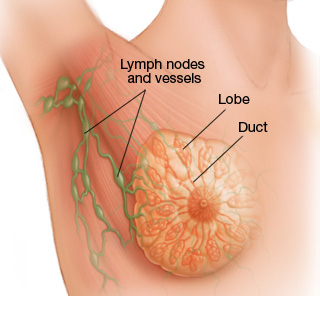
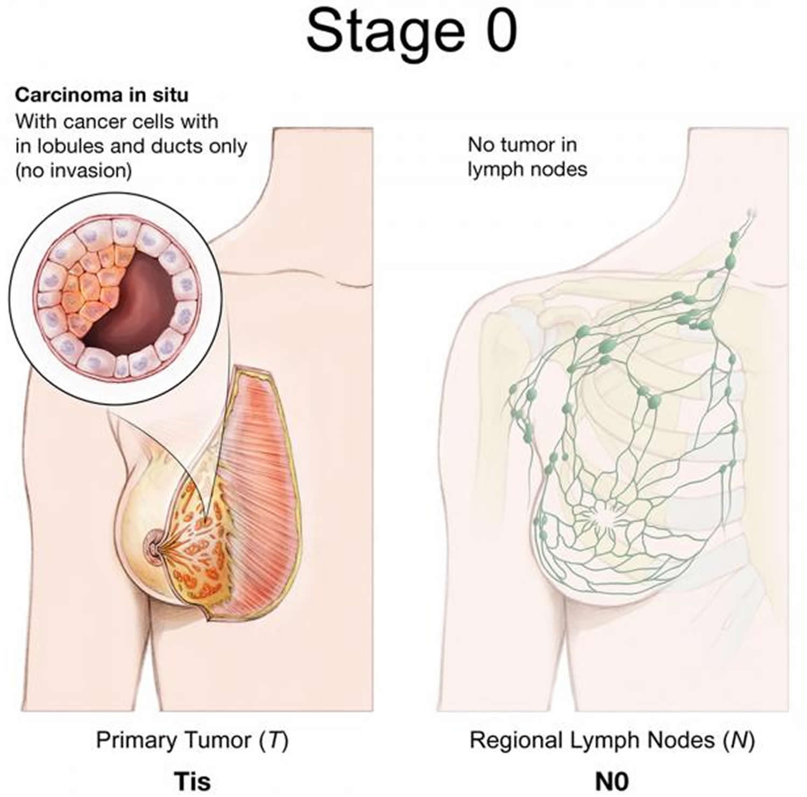
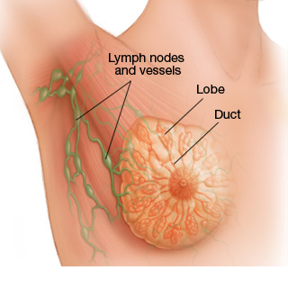
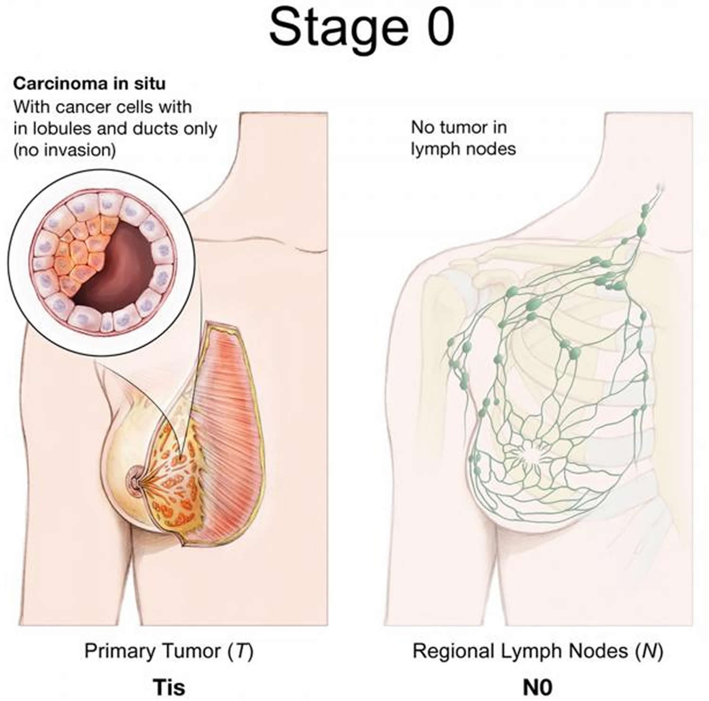

Stage 0 is utilized to portray non-intrusive bosom malignant growths, for example, DCIS (ductal carcinoma in situ).
In stage 0, there is no proof of malignant growth cells or non-destructive anomalous cells breaking out of the part
of the bosom in which they began, or breaking through to or attacking neighboring ordinary tissue.
The phase of malignancy demonstrates the measure of the tumor of strange cells and whether those cells are contained to the spot of starting point. The most well-known kind of bosom malignancy is ductal carcinoma in situ (DCIS), demonstrating the disease cell development begins in the milk conduits.
What does the expression, "in situ" mean?
Stage 0 malignant growths are designated "carcinoma in situ." Carcinoma implies disease and "in situ" signifies "in the first spot." Three conceivable sorts of "in situ carcinoma" of the bosom tissue are:
DCIS - Ductal carcinoma in situ
LCIS - Lobular carcinoma in situ
Paget ailment of the areola
Stage 0 bosom cancer,ductal carcinoma in situ (DCIS) is a non-obtrusive malignant growth where irregular cells have been found in the coating of the bosom milk conduit.
In Stage 0 bosom disease, the atypical cells have not spread outside of the conduits or lobules into the encompassing bosom tissue.
Ductal Carcinoma In Situ is all around early malignancy that is very treatable, yet on the off chance that it's left untreated or undetected, it can spread into the encompassing bosom tissue.
Lobular carcinoma in situ at Stage 0 for the most part isn't viewed as malignancy. Despite the fact that it has carcinoma in the name, it truly portrays a development of unusual yet non-intrusive cells shaping in the lobules. A few specialists lean toward the name lobular neoplasia consequently in light of the fact that it precisely alludes to the unusual cells without naming them as malignant growth.
LCIS, be that as it may, may demonstrate a lady has an expanded danger of creating bosom malignant growth.
On the off chance that you have been determined to have LCIS, your specialist may suggest ordinary clinical bosom tests and mammograms.
The individual in question may likewise recommend Tamoxifen, a hormone treatment medicine that keeps malignant growth cells from developing.

 


